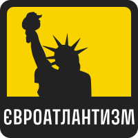
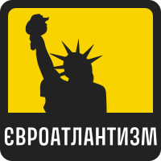
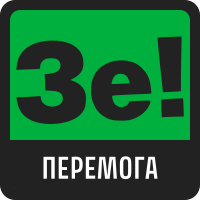
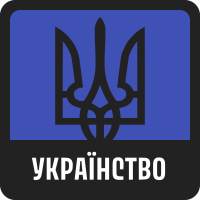
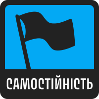
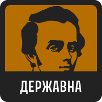
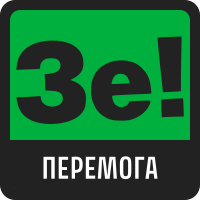
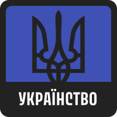
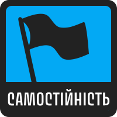
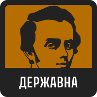

ПОЛІТИКА
ВПЛИВ
ДИПЛ.
МОВА

 

 







Ukrainianvalues – це, по суті, політична вікторина по питанням про українську політику, яка намагається визначити
відсотки для восьми різних українськиї цінностей. Вам буде представлено питання, а потім ви відповісте своєю
думкою щодо цього питання, від Повністю згоден до Зовсім не згоден, причому кожна відповідь трохи
впливає на ваші результати. Наприкінці тесту ваші відповіді буде порівняно з максимально можливим для кожного
значення, що дасть вам відсоток. Відповідайте чесно!
В тесті питань.
Тут є 4 окремих осі - Політична, Вплив, Дипломатія, і Мова - кожна має два протилежних значення. Це:
ЗРАДА
Цей параметр оцінює ставлення до політичної ситуації та зовнішньої політики України. На одному кінці спектра знаходиться Зрада, що може відображати песимістичне або критичне ставлення до дій українського уряду, сприйняття компромісів з ворогами як зраду національних інтересів.
ПОЛІТИКА
ПЕРЕМОГА
На протилежному кінці — Перемога, яка символізує оптимістичне бачення та підтримку активних зусиль уряду для досягнення національних цілей, особливо у контексті міжнародних відносин та оборони суверенітету.
РУСОФІЛІЯ
Цей вектор вимірює сприйняття та ставлення до російської культури та політики. Русофілія відображає позитивне ставлення до Росії, її культури, історії та політичних зв'язків з Україною. Люди, які нахиляються до цього кінця спектра, можуть підтримувати зближення з Росією або вважають, що співпраця може принести користь.
ВПЛИВ
УКРАЇНСТВО
На протилежному кінці спектра знаходиться Українство, яке підкреслює значення української ідентичності, культури та інтересів, відстоюючи політику, що спрямована на укріплення державної незалежності та відмежування від російського впливу.
ЄВРОАТЛАНТИЗМ
Цей параметр аналізує зовнішньополітичні орієнтири України. Євроатлантизм відображає прагнення до інтеграції з Західними структурами, такими як Європейський Союз та НАТО, підтримку західних цінностей і стандартів демократії та прав людини.
ДИПЛОМАТІЯ
САМОСТІЙНІСТЬ
На протилежному боці Самостійність символізує упор на збереження незалежної зовнішньої політики, скептицизм або відкидання ідеї про необхідність інтеграції в міжнародні блоки, підкреслюючи важливість самостійного визначення власного шляху в міжнародних відносинах.
Толерантність
Ця вісь відображає ставлення до мовної політики в Україні. Толерантність вказує на толерантне ставлення до мови, яка використовується в публічному просторі, підтримку багатомовності та вважає, що мовний вибір не повинен бути обмеженим державними регуляціями.
МОВА
ДЕРЖАВНА
На протилежному кінці спектра Державна підтримує ідею про те, що українська мова повинна мати особливий статус та бути основною в усіх сферах життя країни, наголошуючи на її важливості для збереження національної ідентичності та культурної спадщини.